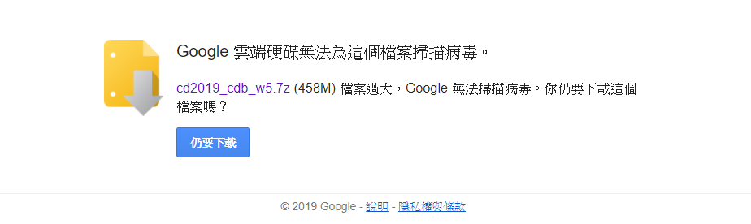
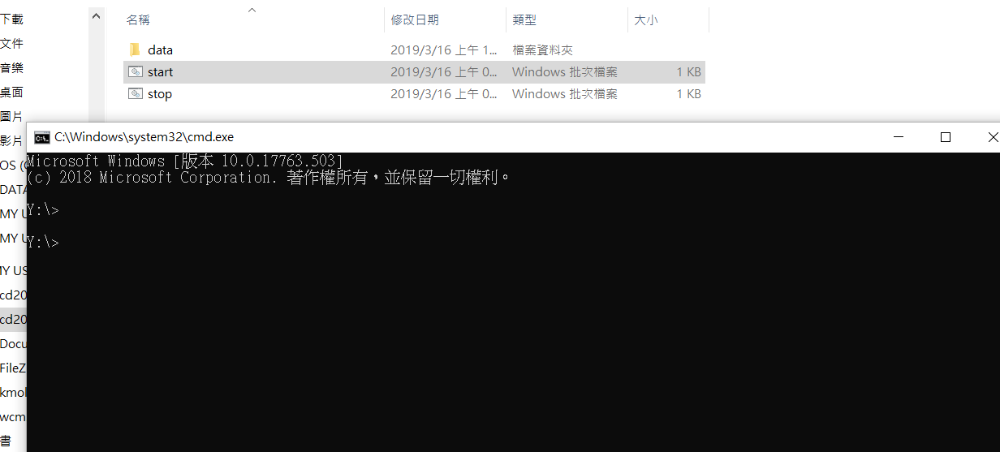

取得 Windows 10 64 位元環境下的可攜程式環境 (下載 2019_cdb_w5.7z), 下載後解開目錄, 放入 USB3.0 規格以上的隨身碟或隨身硬碟.

以滑鼠點擊 start.bat 開啟可攜隨身系統, 以 stop.bat 關閉可攜隨身系統, 隨身碟必須在關閉所有應用程式執行下, 才可正常退出.
了解基本的 DOS (Disk Operating System) 指令

C:\> 符號為 DOS 命令列視窗的回應 , 表示目前在 C 槽硬碟的 \ 根目錄, 若要切換到 Y 槽, 則在電腦的回應後, 輸入 Y:, 命令列將轉為Y:\>
若要更換目錄, 則使用 cd,例如: Y:\>cd tmp
若要再回到 Y 槽的根目錄, 可以使用 cd ..
表示要從目前所在目錄, 往上跳回一個目錄, 也就是重新回到 Y 槽的根目錄.
另外, 無論目前位於哪一個子目錄, 也可以使用 cd \
cd \tmp\repo\ssh\wcm2019
直接從 Y 槽的根目錄, 跳進 Y:\tmp\repo\ssh\wcm2019>
dir - 列出目前所在目錄的內容
mkdir - 隨後加上要建立目錄的名稱, 可以建立目錄
cls -清除目前的命令列顯示的內容